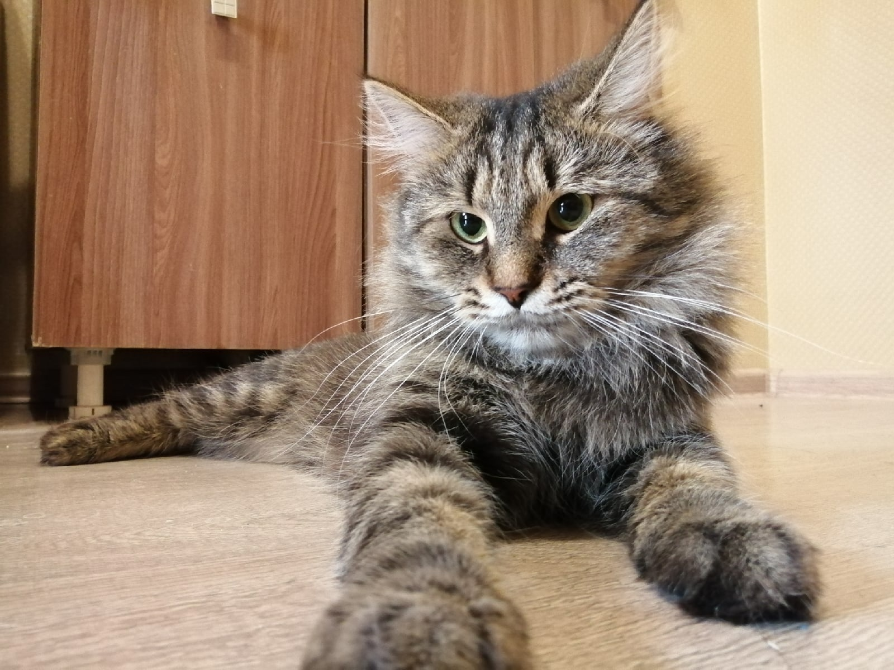

Родилась в Забайкалье. 33 года. Работаю репетитором и преподаю иностранные языки уже более 10 лет. Люблю природу, животных, хорошее кино и книги.
Образование
Забайкальский государственный гуманитарно-педагогический университет им. Н.Г. Чернышевского, Чита.
Филологический факультет, Романо-германская филология (английский и испанский языки) 2006-2010 гг.
Забайкальский государственный университет, Чита. Филологический факультет, Литература народов зарубежных стран. 2013-2015 гг.
Университет штата Аризона. Курс «Teach English Now!» 2021-2022 гг.
Опыт работы
Какое-то время работала учителем в школе, преподавателем в колледже.Также работала техническим секретарем в приемной комиссии университета. Несколько лет была администратором онлайн-магазинов на сайтах ebay и etsy. В данный момент работаю в языковой онлайн-школе, а также даю уроки вне школы.
Хобби
В свободное время пишу книги и принимаю участие в различных литературных конкурсах. Мою писательскую страничку можно просмотреть тут или кликнув на изображение ниже.
Также у меня пять котов, которые в разное время были спасены с улицы. Иногда они дерутся, но в целом мы все живем весело и мирно

Как я стала разработчиком.
В июне 2022 года я начала искать курсы по программированию, потому что не знала, с чего начать
16 июня начала курс Skill Factory "Надежный старт в IT", где в течение нескольких недель попробовала себя в разных сферах
Спустя какое-то время я начала думать, чем же я хочу заниматься дальше
19 сентября я приступила к изучению курса "Frontend-разработчик PRO"
Я не пожалела о своём выборе, потому что frontend - это очень интересная для меня сфера